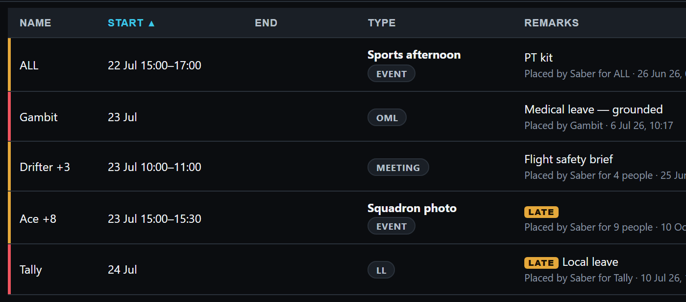
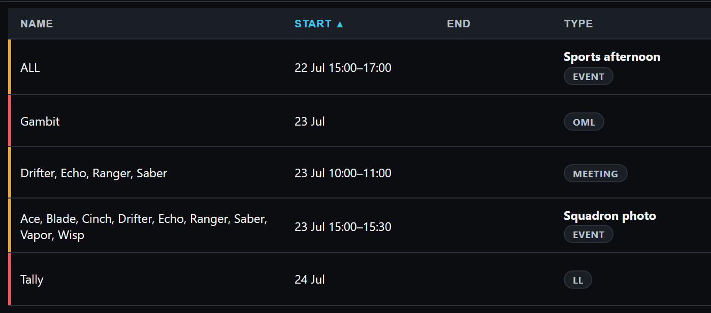
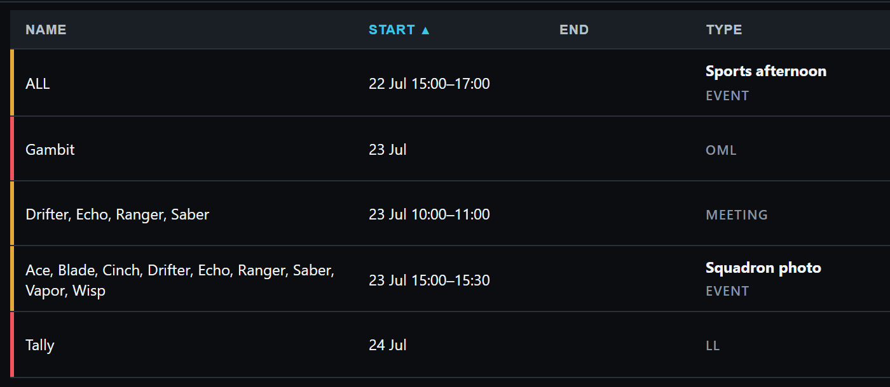
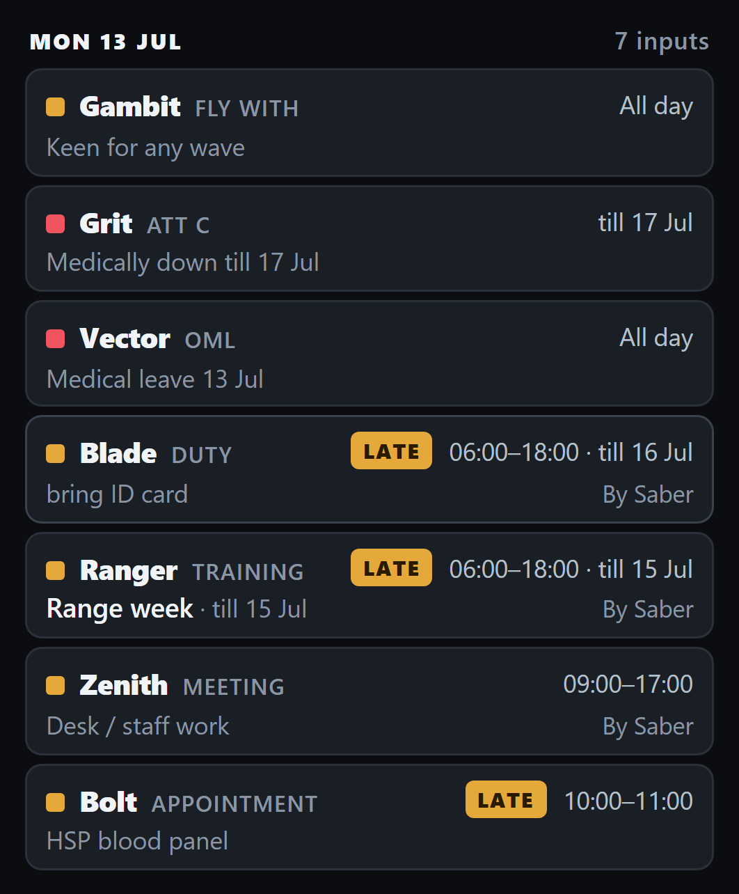
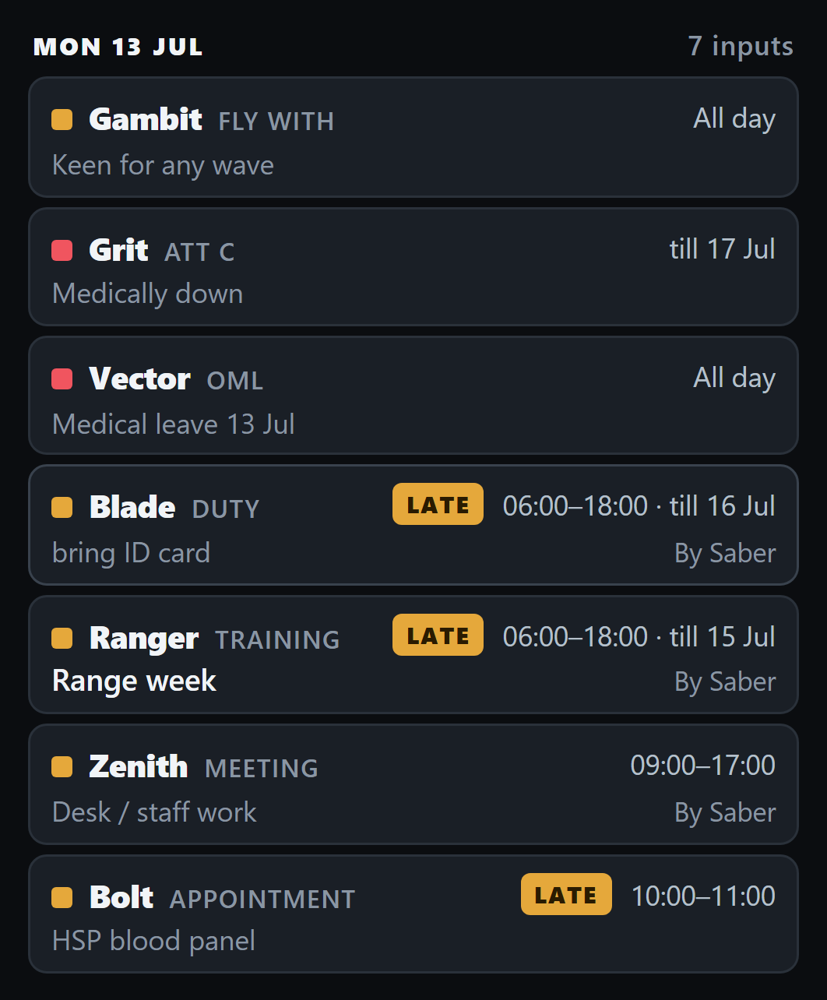
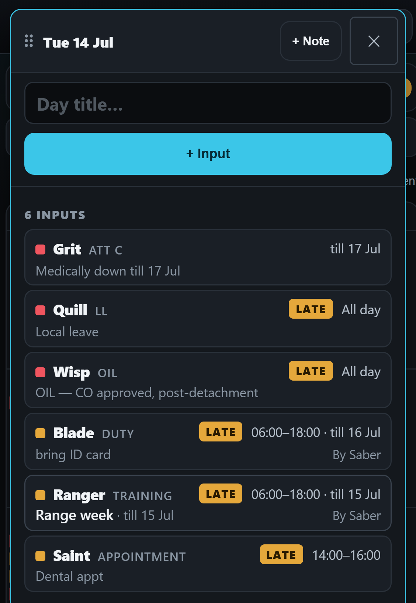
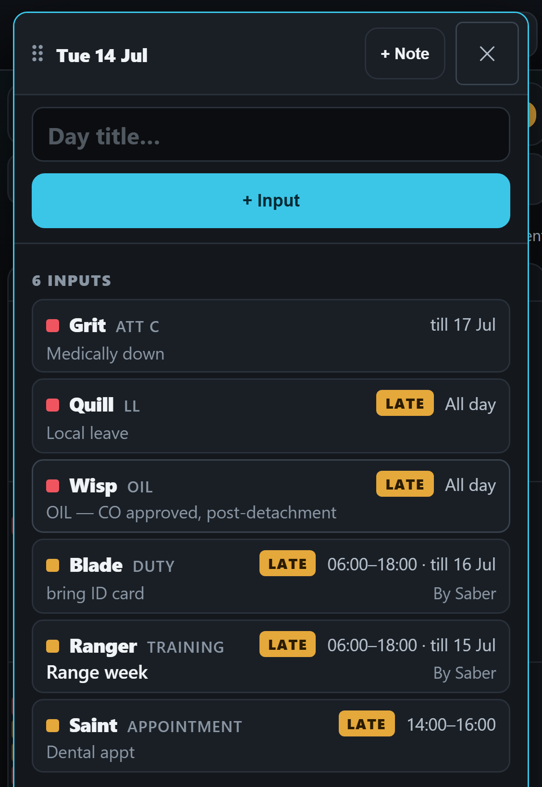

<title>Input Card Questions</title>
<link rel="stylesheet" href="https://fonts.googleapis.com/css2?family=Barlow:wght@400;500;600&family=Barlow+Semi+Condensed:wght@600;700&display=swap">
<style>
  /* One column: two questions left open by the input card's check, each shown as today / drawn, then the choices.
     A single dark look, the app's own: its panels, its cyan, its amber. */
  :root {
    color-scheme: dark;
    --bg: #0b0d11; --panel: #14181e; --edge: #2a313b; --ink: #e9edf2; --ink-2: #a8b1bd; --ink-3: #7a8491;
    --accent: #3bc6e8; --mark: #ffd60a;
    --display: "Barlow Semi Condensed", "Arial Narrow", Arial, sans-serif;
    --body: Barlow, "Segoe UI", Arial, sans-serif;
  }
  body { background: var(--bg); color: var(--ink); font-family: var(--body); font-size: 16px; line-height: 1.45; }
  main { max-width: 760px; margin: 0 auto; padding-inline: 16px; padding-block: 20px 48px; display: flex; flex-direction: column; gap: 32px; }
  h1 { font-family: var(--display); font-weight: 700; font-size: 30px; line-height: 1.1; margin: 0; text-wrap: balance; }
  h2 { font-family: var(--display); font-weight: 700; font-size: 22px; line-height: 1.15; margin: 0; text-wrap: balance; }
  p { margin: 0; color: var(--ink-2); max-width: 62ch; }
  .lede { color: var(--ink); }
  .tag { font-family: var(--display); font-weight: 700; letter-spacing: .08em; text-transform: uppercase; font-size: 12px; color: var(--ink-3); }
  .tag.new { color: var(--mark); }
  .pair { display: grid; grid-template-columns: repeat(auto-fit, minmax(260px, 1fr)); gap: 16px; align-items: start; }
  .stack { display: flex; flex-direction: column; gap: 18px; }
  figure { margin: 0; display: flex; flex-direction: column; gap: 8px; min-width: 0; }
  figure button.pic { all: unset; cursor: zoom-in; display: block; border: 1px solid var(--edge); border-radius: 12px; overflow: hidden; background: var(--panel); }
  figure button.pic:focus-visible, .more:focus-visible { outline: 2px solid var(--accent); outline-offset: 2px; }
  figure img { display: block; width: 100%; height: auto; }
  figcaption { display: flex; flex-direction: column; gap: 2px; }
  figcaption b { font-weight: 600; color: var(--ink); }
  figcaption span { color: var(--ink-2); font-size: 15px; }
  .more { all: unset; cursor: zoom-in; color: var(--accent); font-size: 15px; font-weight: 600; text-decoration: underline; text-underline-offset: 3px; align-self: flex-start; border-radius: 4px; }
  section { display: flex; flex-direction: column; gap: 14px; }
  .q { border: 1px solid var(--edge); border-radius: 12px; background: var(--panel); padding: 14px 16px; display: flex; flex-direction: column; gap: 6px; }
  .q b { color: var(--ink); font-weight: 600; }
  .q span { color: var(--ink-2); }
  .q .rec { color: var(--accent); font-weight: 600; }
  dialog { border: 0; padding: 0; background: #000; max-width: 100vw; max-height: 100dvh; width: 100vw; height: 100dvh; overflow: auto; }
  dialog::backdrop { background: #000; }
  dialog img { display: block; width: 780px; max-width: none; margin: 0 auto; cursor: zoom-out; }
  dialog img.wide { width: 1392px; }
  dialog button { position: fixed; top: calc(10px + env(safe-area-inset-top, 0px)); right: 12px; font: 600 15px var(--body); color: var(--ink); background: var(--panel); border: 1px solid var(--edge); border-radius: 10px; padding: 8px 14px; }
</style>
<main>
  <header style="display:flex;flex-direction:column;gap:8px">
    <span class="tag">A drawing · the “drawn” pictures are not built</span>
    <h1>Two questions left by the input card</h1>
    <p class="lede">Every picture is the real app with its own demo inputs. A “today” picture is untouched. In a “drawn” picture only the words in question are changed. Tap a picture to see it full size.</p>
  </header>

  <section>
    <span class="tag">Question 2 · a desktop only</span>
    <h2>The Inputs table: “Drifter +3”, and the kind as a pill</h2>
    <p>The cards on a phone now name everyone in a shared input and write the kind in small grey capitals. The desktop table still does neither: it shows the first name and a count, and the kind sits in a pill.</p>
    <div class="stack">
      <figure>
        <button type="button" class="pic" data-zoom="img/card-questions/q2-table-today-left.png" aria-label="Open picture: the desktop table today"></button>
        <figcaption><span class="tag">Today</span><b>“Drifter +3” and “Ace +8”</b><span>Who the other people are shows only when the mouse rests on the name.</span></figcaption>
      </figure>
      <figure>
        <button type="button" class="pic" data-zoom="img/card-questions/q2-table-names-left.png" aria-label="Open picture: the desktop table drawn with every name"></button>
        <figcaption><span class="tag new">Drawn · A</span><b>Every name, the pill kept</b><span>Four names fit on one line. Nine take two lines, so that row is a little taller. The Name column is wider and Remarks gives up the room.</span></figcaption>
      </figure>
      <figure>
        <button type="button" class="pic" data-zoom="img/card-questions/q2-table-names-grey-left.png" aria-label="Open picture: the desktop table drawn with every name and the kind in small grey capitals"></button>
        <figcaption><span class="tag new">Drawn · B</span><b>Every name, and the kind in small grey capitals</b><span>The same look as the cards on a phone and in an opened day.</span></figcaption>
        <button type="button" class="more" data-zoom="img/card-questions/q2-table-names-grey.png" data-wide>See the whole table row, B</button>
      </figure>
    </div>
  </section>

  <section>
    <span class="tag">Question 3 · the cards</span>
    <h2>A several-day input says “till 17 Jul” twice</h2>
    <p>The card’s right corner already says when a several-day input ends. The remark under it often says so again, because the app writes “till 17 Jul” into the remark by itself. Look at Grit and Ranger.</p>
    <div class="pair">
      <figure>
        <button type="button" class="pic" data-zoom="img/card-questions/q3-list-today.png" aria-label="Open picture: the Inputs list on a phone today"></button>
        <figcaption><span class="tag">Today · the list</span><b>“till” at the right and again in the remark</b></figcaption>
      </figure>
      <figure>
        <button type="button" class="pic" data-zoom="img/card-questions/q3-list-proposed.png" aria-label="Open picture: the Inputs list on a phone, drawn"></button>
        <figcaption><span class="tag new">Drawn · the list</span><b>Said once</b><span>“Medically down” and “Range week” stay. Blade’s typed remark, “bring ID card”, is untouched.</span></figcaption>
      </figure>
    </div>
    <div class="pair">
      <figure>
        <button type="button" class="pic" data-zoom="img/card-questions/q3-day-today.png" aria-label="Open picture: a day opened on the Inputs calendar today"></button>
        <figcaption><span class="tag">Today · an opened day</span><b>The same doubling</b></figcaption>
      </figure>
      <figure>
        <button type="button" class="pic" data-zoom="img/card-questions/q3-day-proposed.png" aria-label="Open picture: a day opened on the Inputs calendar, drawn"></button>
        <figcaption><span class="tag new">Drawn · an opened day</span><b>Said once</b></figcaption>
      </figure>
    </div>
  </section>

  <section>
    <h2>Yours to choose</h2>
    <div class="q"><b>2a · Name everyone on the desktop table?</b><span><span class="rec">Recommended: yes.</span> It is what you chose for the cards: never a “+3” hiding who is in it. The cost is a taller row for a big group and a narrower Remarks column.</span></div>
    <div class="q"><b>2b · The kind: pill or small grey capitals?</b><span><span class="rec">Recommended: small grey capitals (drawing B).</span> Then the kind looks the same on the table, the cards and the schedule’s row.</span></div>
    <div class="q"><b>3 · Leave the automatic “till …” out of the remark on the card?</b><span><span class="rec">Recommended: yes.</span> Only on the cards, and only those exact words. Anything else in the remark stays. The input itself is not changed, so the schedule and the desktop table’s Remarks column read as they do now.</span></div>
  </section>
</main>
<dialog id="zoom" aria-label="Picture, full size"><button type="button" id="zoomClose">Close</button></dialog>
<script>
  const dlg = document.getElementById('zoom'), big = document.getElementById('zoomImg')
  document.querySelectorAll('[data-zoom]').forEach(b => b.addEventListener('click', () => {
    big.src = b.dataset.zoom; big.alt = (b.querySelector('img') || b.closest('figure').querySelector('img')).alt
    big.classList.toggle('wide', b.hasAttribute('data-wide'))
    if (dlg.showModal) dlg.showModal(); else dlg.setAttribute('open', '')
  }))
  const shut = () => { if (dlg.close) dlg.close(); else dlg.removeAttribute('open') }
  document.getElementById('zoomClose').addEventListener('click', shut)
  big.addEventListener('click', shut)
</script>
